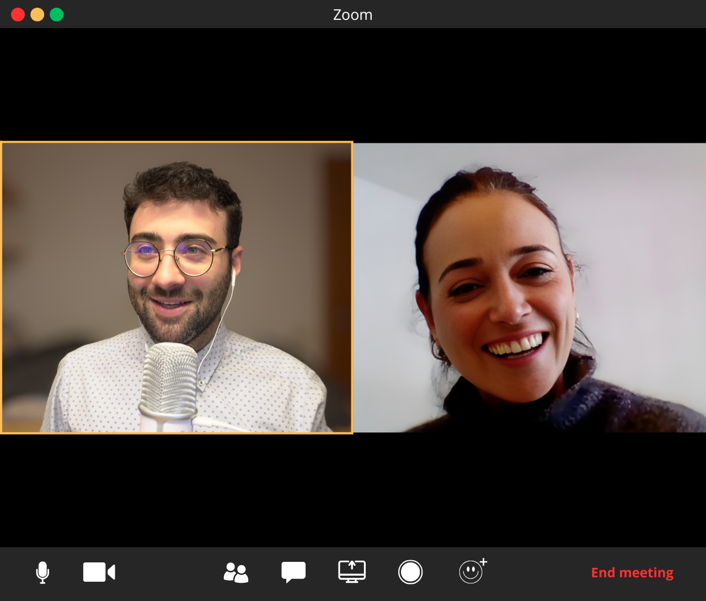

Ayuda puntual y personalizada para resolver ese bloqueo concreto que frena tu investigación.
Las asesorías puntuales están pensadas para investigadores que tienen un problema específico y quieren resolverlo con alguien que entienda el proceso académico.
Una sesión puede ser la diferencia entre semanas de dar vueltas y avanzar con claridad. Sin compromisos a largo plazo, sin suscripciones — solo una conversación enfocada en lo que necesitas ahora.
Agendar mi asesoría
Estos son los temas más comunes que resolvemos en una asesoría.
Revisión detallada de tu paper, artículo o capítulo de tesis. Te doy feedback concreto sobre estructura, argumentación, claridad y estilo académico para que tu manuscrito suba de nivel.
¿No sabes si tu enfoque metodológico es el adecuado? Revisamos juntos tu diseño de investigación, herramientas de análisis y coherencia entre preguntas, método y resultados.
Orientación sobre técnicas de análisis, interpretación de resultados y presentación de datos. Te ayudo a que tus resultados cuenten la historia que tu investigación necesita.
Selección de revista, posicionamiento del paper, cover letter, respuesta a revisores. Todo lo que necesitas saber para maximizar tus probabilidades de aceptación.
Tres pasos simples para resolver tu bloqueo.
Rellenas un breve formulario donde me cuentas tu situación y qué necesitas resolver.
Sesión 1 a 1 por videollamada, enfocada 100% en tu problema. Sin rodeos, directo a la solución.
Sales de la sesión con un plan de acción concreto y las respuestas que necesitabas.
Alejandro me aportó muchísimos recursos para mejorar mi productividad, tanto en el ámbito académico como en el personal. No solo te transmite su experiencia, sino que sabe darte consejos desde el conocimiento muy útiles y que te pueden ahorrar muchas frustraciones.